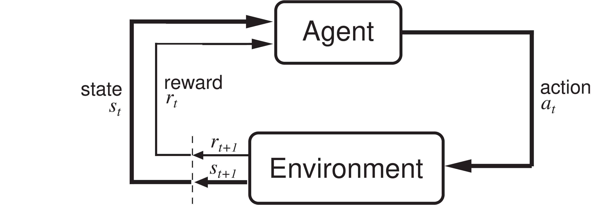

This is a brief guide on how to set up a reinforcement learning (RL) environment that is compatible to the Gymnasium 1.0 interface. Gymnasium de facto defines the interface standard for RL environments and the library provides useful tools to work with RL environments.
Gymnasium¶
Gymnasium is "An API standard for reinforcement learning with a diverse collection of reference environments" (https://gymnasium.farama.org/).
It is a Python library that can be installed with
!pip install -U gymnasium
With the recent release of version 1.0.0 (2024/10/08) the API is stable.
Components of Reinforcement Learning¶

Source: Sutton, R.S., Barto A.G. (2018). Reinforcement Learning: An Introduction (2nd ed.). MIT Press. http://incompleteideas.net/book/RLbook2020.pdf
- state: should contain all information about the current state of the agent and the environment
- action: should contain all information that determine the action of the agent in the environment
- reward: tells the agent how well it performed based on the current state, its action, and the next state
The distribution of the next state only depends on the current state and the action. The distribution of the reward only depends on the current state, action, and next state. That's the theory of Markov decision processes (MDPs). In practice, we often don't have the full state information. In this case we talk about observations.
Environment Interface¶
The class gymnasium.Env (link to documentation) is the main class for implementing reinforcement learning environments.
Constructor of an Environment (__init__)¶
In the constructor, we have to define the observation and action space, which declare the general set of possible inputs (actions) and outputs (observations) of the environment.
Gymnasium Spaces Interface¶
Spaces describe mathematical sets and are used in Gym to specify valid actions and observations.
Every Gym environment must have the attributes action_space and observation_space. If, for instance, three possible actions (0,1,2) can be performed in your environment and observations are vectors in the two-dimensional unit cube, the environment code may contain the following two lines:
self.action_space = spaces.Discrete(3)
self.observation_space = spaces.Box(0, 1, shape=(2,))
We usually don't need to implement our own spaces, since Gymnasium provides various implementations of spaces:
gymnasium.spaces.Box(link to documentation): A bounded or unbounded box in $\mathbb{R}^n$. Specifically, a Box represents the Cartesian product of n closed intervals. Each interval has the form of one of $[a, b]$, $(-\infty, b]$, $[a, \infty)$, or $(-\infty, \infty)$.gymnasium.spaces.Discrete(link to documentation): A space consisting of finitely many elements. This class represents a finite subset of integers, more specifically a set of the form $\{ a, a+1, \dots, a+n-1 \}$.- see documentation for more
Attributes of Environment¶
An environment usually contains the following attributes:
Env.action_space: spaces.Space[ActType]- The Space object corresponding to valid actions, all valid actions should be contained with the space.Env.observation_space: spaces.Space[ObsType]- The Space object corresponding to valid observations, all valid observations should be contained with the space.Env.metadata: dict[str, Any] = {'render_modes': []}- The metadata of the environment containing rendering modes, rendering fps, etc.Env.render_mode: str | None = None- The render mode of the environment determined at initialisation.Env.spec: EnvSpec | None = None- The EnvSpec of the environment normally set duringgymnasium.make().
Minimal Interface¶
The minimum of functions that need to be implemented for a new environment are
Env.step(action: ActType) -> tuple[ObsType, float, bool, bool, dict[str, Any]]- Run one timestep of the environment's dynamics using the agent actions.
- Parameters
- action (ActType) - an action provided by the agent to update the environment state. ActType is usually a NumPy array with
ndim == 1.
- action (ActType) - an action provided by the agent to update the environment state. ActType is usually a NumPy array with
- Returns
- observation (ObsType) - An element of the environment’s observation_space as the next observation due to the agent actions. ObsType is usually a NumPy array with
ndim == 1. - reward (float) - The reward as a result of taking the action.
- terminated (bool) - Whether the agent reaches the terminal state (as defined under the MDP of the task) which can be positive or negative. An example is reaching the goal state or moving into the lava from the Sutton and Barto Gridworld. If true, the user needs to call
reset(). - truncated (bool) - Whether the truncation condition outside the scope of the MDP is satisfied. Typically, this is a timelimit, but could also be used to indicate an agent physically going out of bounds. Can be used to end the episode prematurely before a terminal state is reached. If true, the user needs to call
reset(). - info (dict) - Contains auxiliary diagnostic information (helpful for debugging, learning, and logging). This might, for instance, contain: metrics that describe the agent's performance state, variables that are hidden from observations, or individual reward terms that are combined to produce the total reward.
- observation (ObsType) - An element of the environment’s observation_space as the next observation due to the agent actions. ObsType is usually a NumPy array with
Env.reset(seed: int = None, options: dict[str, Any] = None) → tuple[ObsType, dict[str, Any]]- Resets the environment to an initial internal state, returning an initial observation and info.
- Parameters
- seed (optional int) - The seed that is used to initialize the environment’s PRNG (np_random) and the read-only attribute np_random_seed. If the environment does not already have a PRNG and seed=None (the default option) is passed, a seed will be chosen from some source of entropy (e.g., timestamp or /dev/urandom). However, if the environment already has a PRNG and seed=None is passed, the PRNG will not be reset and the env's np_random_seed will not be altered. If you pass an integer, the PRNG will be reset even if it already exists. Usually, you want to pass an integer right after the environment has been initialized and then never again.
- options (optional dict) - Additional information to specify how the environment is reset (optional, depending on the specific environment)
- Returns
- observation (ObsType) - Observation of the initial state. This will be an element of observation_space (typically a NumPy array) and is analogous to the observation returned by
step(). - info (dictionary) - This dictionary contains auxiliary information complementing observation. It should be analogous to the info returned by
step().
- observation (ObsType) - Observation of the initial state. This will be an element of observation_space (typically a NumPy array) and is analogous to the observation returned by
Additional Interface¶
In addition, the following functions should be implemented.
Env.render() → RenderFrame | list[RenderFrame] | None- Compute the render frames as specified by render_mode during the initialization of the environment.
- By convention, if the render_mode is:
None(default): no render is computed."human": The environment is continuously rendered in the current display or terminal, usually for human consumption. This rendering should occur duringstep()andrender()doesn’t need to be called. ReturnsNone."rgb_array": Return a single frame representing the current state of the environment. A frame is a np.ndarray with shape(x, y, 3)representing RGB values for an x-by-y pixel image.- ... there are more conventions defined here.
Env.close()- After the user has finished using the environment, close contains the code necessary to "clean up" the environment. This is critical for closing rendering windows, database or HTTP connections. Calling close on an already closed environment has no effect and won’t raise an error.
Example¶
import numpy as np
import gymnasium as gym
class OmnidirectionalRobot2DEnv(gym.Env):
def __init__(
self,
# just to show that we can pass arguments to the constructor
robot_name="Otto"
):
self.robot_name = robot_name
self._robot_location = np.array([0.5, 0.5])
self._goal_location = np.array([0.2, 0.1])
self._n_steps = 0
# observation_space is a public interface
self.observation_space = gym.spaces.Box(
low=np.array([0.0, 0.0, 0.0, 0.0]),
high=np.array([1.0, 1.0, 0.5, 0.5]),
shape=(4,),
dtype=float,
seed=self.np_random
)
# action_space is a public interface
self.action_space = gym.spaces.Box(
low=np.array([-0.1, -0.1]),
high=np.array([0.1, 0.1]),
shape=(2,),
dtype=float,
seed=self.np_random
)
def reset(self, seed=None, options=None):
# this is necessary to properly initialize the random number generator
super().reset(seed=seed)
self.observation_space.seed(seed)
self.action_space.seed(seed)
obs = self.observation_space.sample()
self._robot_location = obs[:2]
self._goal_location = obs[2:]
self._n_steps = 0
info = { # can be empty or contain useful information
"goal_location": self._goal_location
}
return obs, info
def step(self, action):
self._n_steps += 1
# this is very important: map action to a valid action
# in this case we just clip the action to the action space
action = np.clip(action, self.action_space.low, self.action_space.high)
# random motion of goal, use the internal random number generator
# that uses the numpy interface:
# https://numpy.org/doc/stable/reference/random/generator.html
self._goal_location += 0.05 * self.np_random.random(2)
self._robot_location += action
obs = np.hstack((self._robot_location, self._goal_location))
obs = np.clip(obs, self.observation_space.low, self.observation_space.high)
self._robot_location = obs[:2]
self._goal_location = obs[2:]
distance = np.linalg.norm(self._goal_location - self._robot_location)
# Episode successfully terminated?
terminated = distance < 0.1
# Truncation with the number of timesteps is not necessary,
# we have an environment wrapper in Gymnasium that can do
# this. It is more important to check limits in the state space,
# e.g., did the robot crash into an obstacle? Is the temperature
# to high? Did the robot explode?
truncated = self._n_steps >= 100
reward = -distance
info = { # same as in reset()
"goal_location": self._goal_location
}
return obs, reward, terminated, truncated, info
#def render(self):
# Implementation of a render function is highly recommended for debug purposes.
# Rendering can produce a text (mode: 'ansi') or an image (mode: 'rgb_array').
def close(self):
pass # shut down simulation
Check the Environment¶
Gymnasium provides the function gymnasium.utils.env_checker.check_env(env: Env) to verify environments (link to documentation).
from gymnasium.utils.env_checker import check_env
check_env(OmnidirectionalRobot2DEnv())
Registering an Environment¶
Gymnasium environments are usually created with gymnasium.make_env(id). Before this, external environments have to be registered, so that Gymnasium knows how to create them. You can do this with
gymnasium.register(
# The environment id (name).
id: str,
# The entry point for creating the environment.
entry_point: EnvCreator | str | None = None,
# The reward threshold considered for an agent to have learnt the environment.
reward_threshold: float | None = None,
# If the environment is nondeterministic, i.e., even with knowledge of the initial seed and all actions, the same state cannot be reached.
nondeterministic: bool = False,
# The maximum number of episodes steps before truncation.
max_episode_steps: int | None = None,
# Arbitrary keyword arguments which are passed to the environment constructor on initialisation.
kwargs: dict | None = None
)
gym.register(
"OmnidirectionalRobot2DEnv-v0",
entry_point=OmnidirectionalRobot2DEnv,
reward_threshold=1.0,
nondeterministic=False,
max_episode_steps=100
)
After registering the environment, we can see it when we print it in the last group of the registry.
gym.pprint_registry()
Then we can create a new environment with gymnasium.make().
env = gym.make(
"OmnidirectionalRobot2DEnv-v0",
max_episode_steps=200,
robot_name="Peter"
)
# Gymnasium puts many wrappers around the environment,
# but the robot name is eventually passed to the constructor:
env.unwrapped.robot_name
Further Reading¶
- Gymnasium: Create a Custom Environment, https://gymnasium.farama.org/introduction/create_custom_env/
- Gymnasium: Make your own custom environment, https://gymnasium.farama.org/tutorials/gymnasium_basics/environment_creation/